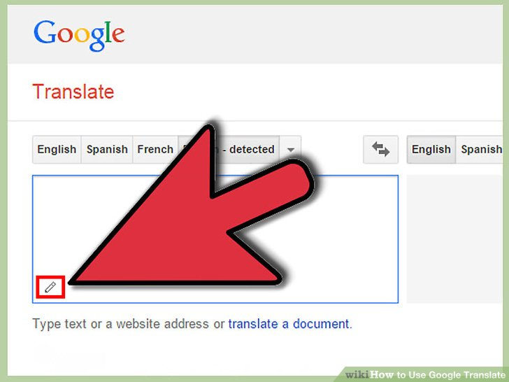
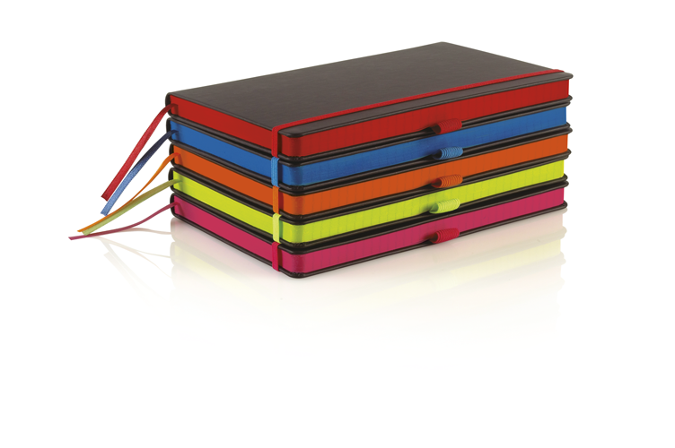

Here you can find 10 tips or hacks about anything which can help you make your life simpler!!!
 Anything Ten
Anything Ten
It’s that time of year again … back to school! While it can be exciting looking forward to a new school year,
it can be a bit overwhelming too when it comes to getting organized.
Hopefully by now you have all the supplies that were on your list, but either way,
you know that it can be an uphill battle to keep everything sorted over the months ahead.
Here are some cool school hacks.
1. Google Translate

Google Translate is very useful when you have written a long essay and you need to check for errors.
All you need to do is copy the essay and paste it in the Google Translate and listen to it. It's the easiest
way to find mistakes.
2. Identifying Notebooks

Everyone has trouble identifying the notebooks when they are alike.
A simple trick to differentiate between the books are to colour the page tops with whichever colour you like.
You can also just write the name of the subject on the page top to differentiate the notebooks.This will save a
lot of your time as well.